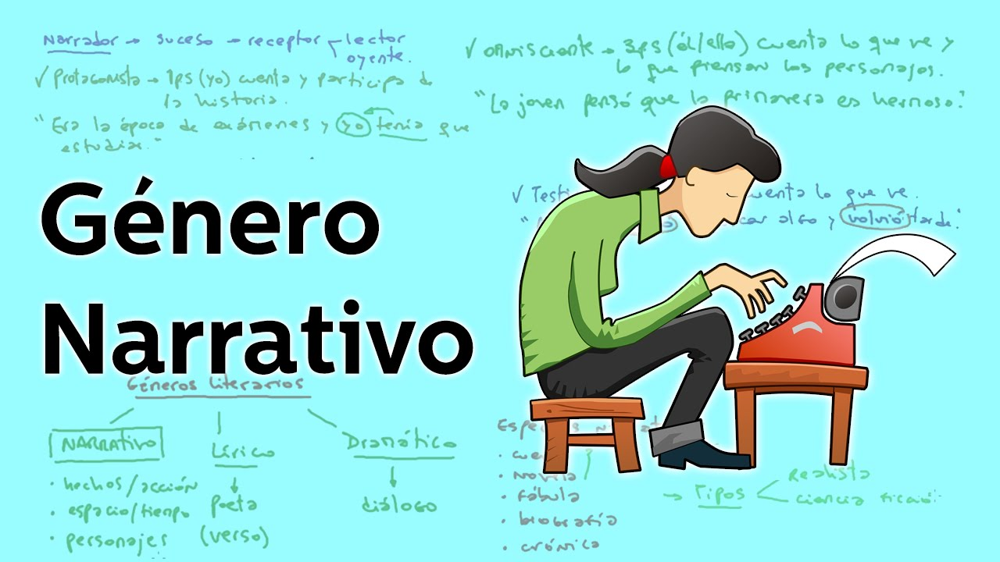
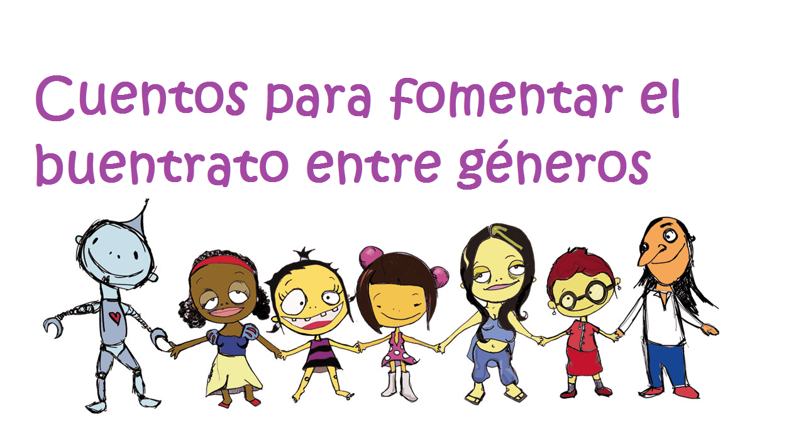
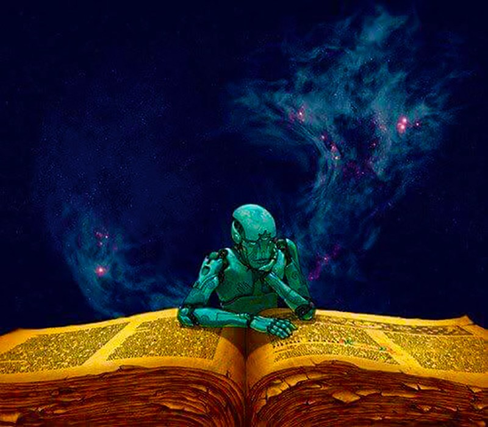
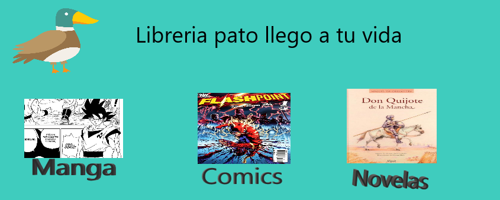
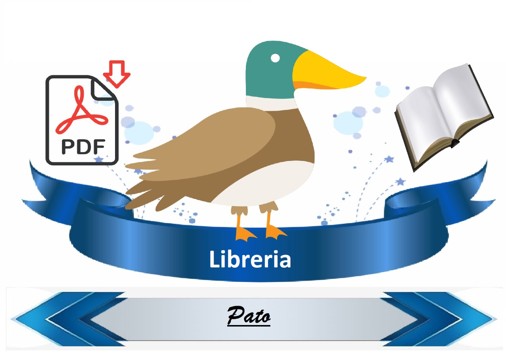

Un problema para muchas personas para no leer, es que los libros estan muy caros, ademas que muchos de los servicios de libros gratuitos tienen muy poca promocion ademas de que los libros que tienen en pdf son de muy mala calidad con fotocopias que estan manchadas de color negro.
Nos preocupamos por una buena lectura entre las personas que no pueden costearce un libro de calidad.
Librerias pato es una empresa ficticia que fue creada para un proyecto de la universidad jose vasconcelos, que consta de crear un sitio web que sea acerca de una libreria.
Ninguno de los servicios es real y tampoco hay libros para descargar en este sitio.